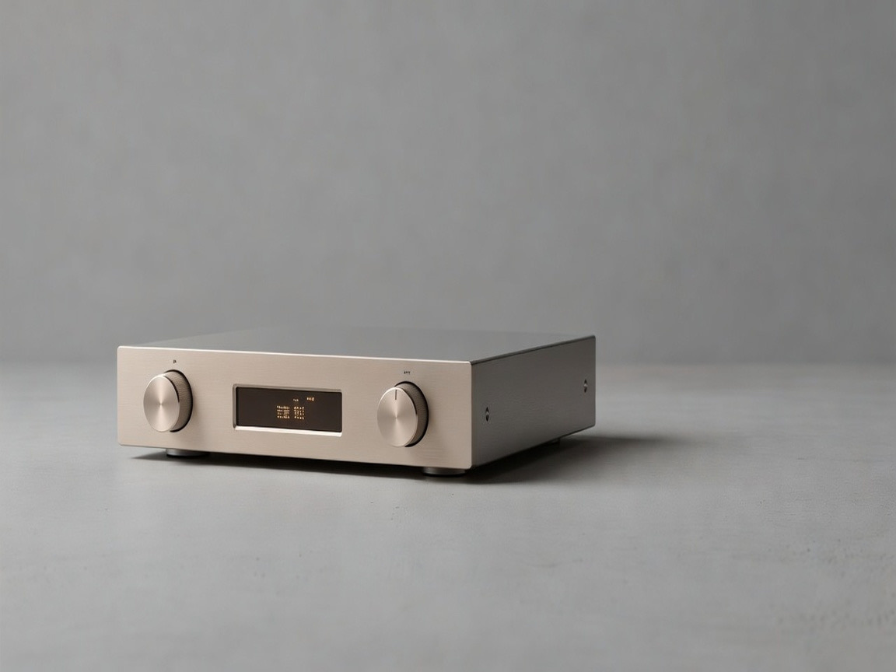
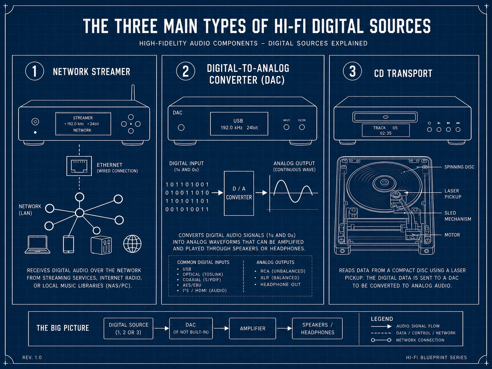
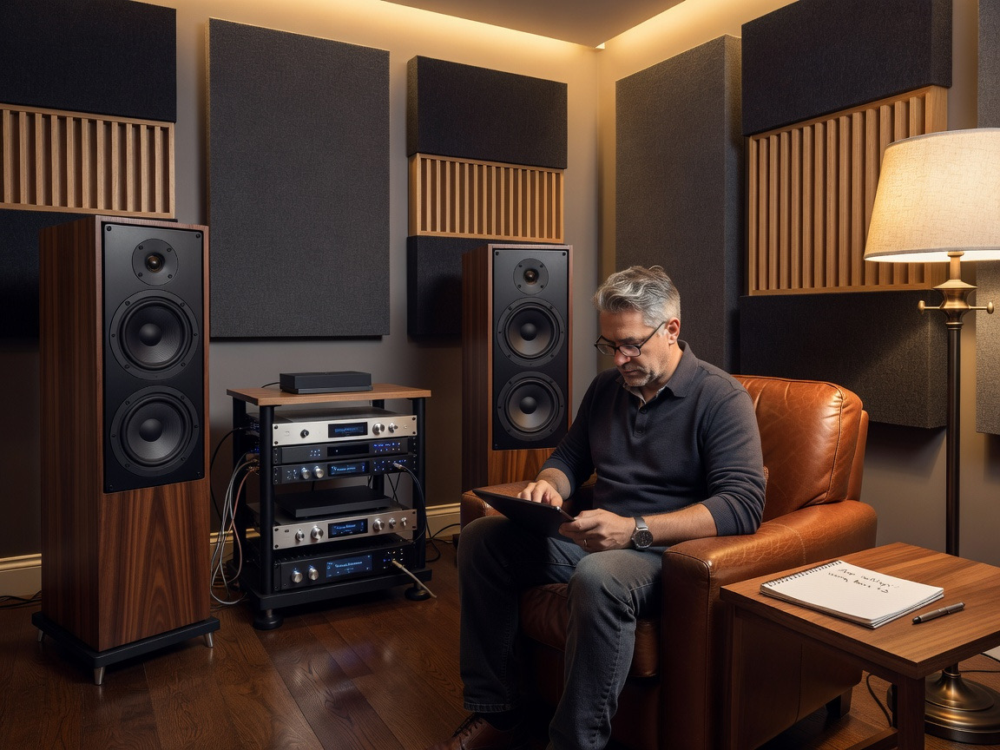
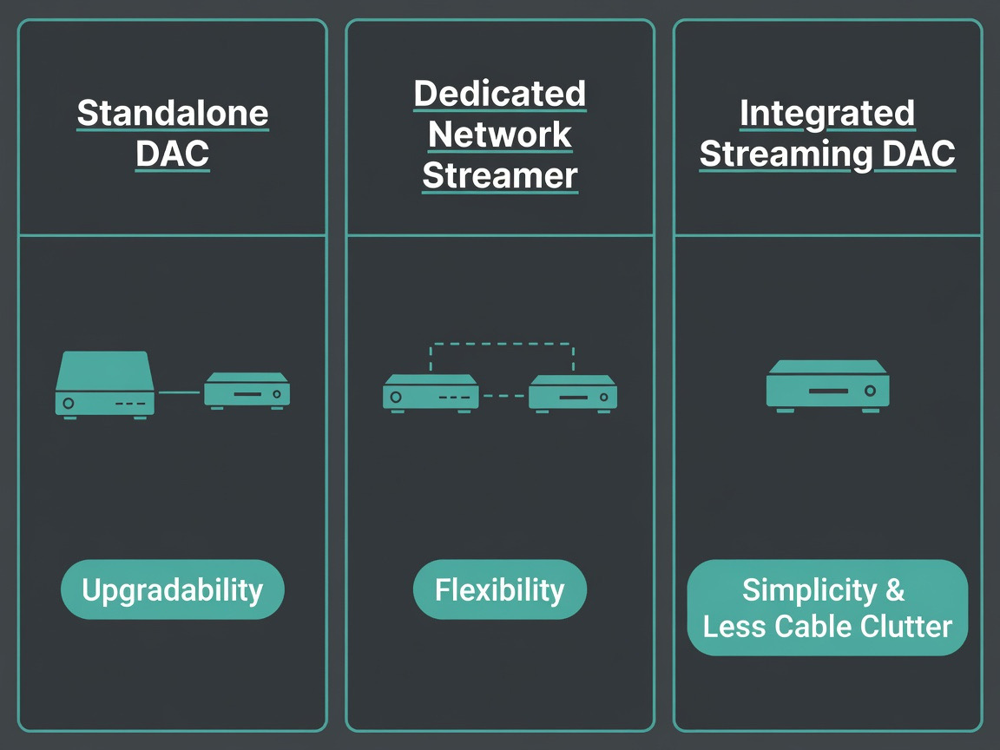
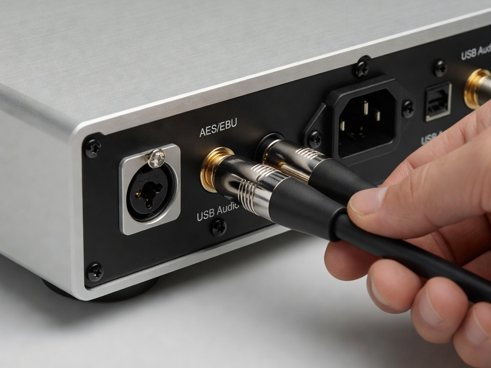
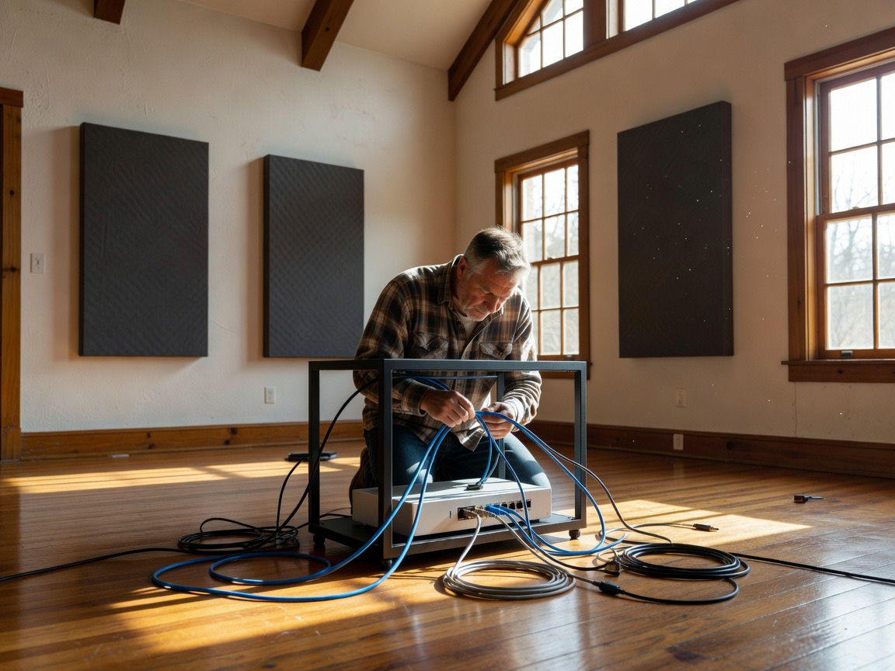

High-End Digital Sources in Ottawa: Buyer's Guide

Walk into any serious listening room in Ottawa these days and the conversation almost always drifts toward the same question: what's feeding the speakers? Not the amp. Not the cables. The source.
For us, the digital source has become the most argued-over, scrutinized, and frankly misunderstood component in a hi-fi chain. It's the part of the system that decides whether your music collection sounds like a recording or sounds like the actual event.
Ottawa happens to have a quietly impressive scene for this. From appointment-only boutiques in the west end to long-standing dealers on Bank Street, the city punches well above its weight when it comes to high-end digital playback.
So let's get into what actually matters, what's available locally, and how to pick a source component that doesn't betray the rest of your system.
What Counts as a Hi-Fi Digital Source?

A hi-fi digital source is any component that reads digital audio data (whether from a streaming service, a local file server, or a disc) and prepares that signal for amplification. The category is broader than most people assume, and the boundaries get blurry fast.
Network Streamers
These pull music off the internet or your home NAS. Think Roon endpoints, Tidal Connect bridges, and dedicated transports that do nothing but shuttle bits cleanly to a DAC. The good ones obsess over timing, jitter, and electrical isolation. The great ones treat the network input like a contamination problem to be solved.
Digital-to-Analog Converters
The DAC is the translator. It takes the digital signal (PCM up to 24-bit 192 kHz, or DSD if you're into that) and turns it into the analog waveform that your preamp can actually use. The conversion stage is where most of the sound quality battle is won or lost.
CD Players and Transports
CDs aren't dead. A surprising number of Ottawa audiophiles still spin discs, partly because the format remains an honest primary source for a lot of recordings that never made it to high-res streaming. A dedicated transport feeding an external DAC is, oddly enough, having a quiet renaissance.
Where to Audition High-End Digital Sources in Ottawa

Reading reviews is fine. Auditioning is better. Ottawa has three spots that consistently come up in audiophile circles, each with a different personality.
Bliss Acoustics
This is the city's appointment-only boutique, and it lives at the top of the food chain. The team at Bliss Acoustics curates an ecosystem of ultra-high-end brands you simply won't find at most shops, including Aurender music servers, MSB Technology DACs, Playback Designs, Esoteric, and Taiko Audio. Their relationship with Swiss manufacturer Nagra Audio adds another layer to what's auditionable in a single visit.
The Sound Choice in Ottawa
Out in Manotick, The Sound Choice covers both sides of the format war. Digital and analog, side by side, with a curated record collection and genuinely useful technical guidance for building out a high-resolution setup. Patrons rate them highly for unhurried demos.
Distinctive Audio on Carling
A 40-year fixture in the Ottawa-Gatineau region, Distinctive Audio leans toward boutique-style service with a deep bench of brands. Worth a stop if you're cross-shopping streamers and integrated DAC solutions. Audioshop on Bank Street is also still in the conversation, particularly for Bryston, NAD, and Rotel digital components.
Which Brands Define Audiophile-Grade Digital Playback?
A few names keep surfacing in Canadian retailer recommendations and forum chatter. Not because they're the loudest marketers, but because they consistently deliver on the technical promises.
Eversolo DMP-A6 and T8
Eversolo came out of nowhere and now occupies a strange sweet spot: serious engineering at prices that don't induce nausea. The DMP-A6 streamer and the T8 streaming transport get praised for their low noise floor, linear power supplies, and a touchscreen interface that doesn't feel like an afterthought.
Bluesound Node ICON and NANO
Built for people who want multi-room high-res streaming without sacrificing audiophile credibility. The Node ICON, in particular, is interesting because it uses a dual mono ESS 9039 Q2M chipset and offers proper XLR outputs, which is rare at its price.
Hi-Fi Rose RS151 and RD160
Available through Vinyl Sound Canada, the Hi-Fi Rose lineup sits at the premium tier of streaming DACs. The aesthetic is unapologetically loud (that giant display is a love-it-or-hate-it situation), but the bit-perfect processing and feature set are genuinely impressive.
How to Choose Between a DAC, Streamer, or All-in-One

This is where most buyers get stuck. The three paths each have a personality.
Standalone DAC Setups
Best if you already have a transport, a music server, or a computer you trust. You isolate the conversion stage and upgrade it independently when the next reference DAC comes along.
Dedicated Network Streamers
Pair with an existing DAC you love. The streamer handles network duties, file retrieval, and signal cleaning. You get flexibility and the ability to mix-and-match across decades of gear.
Integrated Streaming DACs
One box. Streamer, DAC, sometimes a preamp. Simpler. Less cable spaghetti. Slightly less ceiling for future upgrades. For most people building a second system or a tidy main rig, this is the rational choice.
Key Features to Compare Before Buying

Before you commit, run through this short checklist. Most disappointments come from skipping one of these.
- Resolution support up to at least 24-bit/192 kHz PCM, and native DSD if your library demands it
- Output options that match your amp (balanced XLR vs. single-ended RCA matters more than people admit)
- A linear or well-isolated power supply rather than a switching brick
- Galvanic isolation on USB and network inputs
- Roon Ready certification or MQA support, depending on your streaming service of choice
Supported Resolutions and Formats
If you're streaming Qobuz or Tidal, hi-res PCM handling is non-negotiable. DSD support is a bonus that some folks need and others never touch.
Output and Connection Options
XLR balanced outputs reject noise across long runs. Coaxial and AES/EBU digital outs let you split the streamer from the DAC. USB is fine but quality varies wildly between implementations.
Power Supply and Noise Floor
The power stage is the quiet hero. A clean linear supply does more for perceived detail than another DAC chip upgrade ever will.
Match the Source to Your Existing System
Here's the part where I'll be blunt. A $15,000 DAC into mid-tier speakers in an untreated room is a misallocation of money. The source should be roughly proportional to the resolving power of what comes after it. If your speakers can't reveal the difference between a Bluesound Node and an Aurender A20, you're paying for ghosts.
| System Tier | Suggested Digital Source Budget (USD) | Example Component |
|---|---|---|
| Entry audiophile | $500 to $1,200 | Bluesound Node ICON |
| Mid-tier | $1,500 to $4,000 | Eversolo DMP-A6, Hi-Fi Rose RS151 |
| Reference | $8,000 and up | Aurender A20, MSB Premier DAC |
Setup Tips for Ottawa Listeners

A few practical notes, learned the hard way. Ottawa apartments and older homes both have quirky electrical situations, so a dedicated circuit (or at least a decent power conditioner) pays dividends. Network-wise, hardwired Ethernet beats Wi-Fi every time for streaming stability. And if your listening room has hardwood and tall ceilings (common in Glebe and Westboro homes), expect room treatment to matter as much as the source itself.
Follow-Up Questions Ottawa Buyers Often Ask
Most buyers circle back with the same handful of questions: Do I need a separate streamer if I already have a Roon Nucleus? Can I run a CD transport into a modern DAC? Is MQA worth caring about now that Tidal is shifting toward FLAC? The short answers are: probably yes, absolutely yes, and probably not anymore.
FAQ
Is a high-end DAC worth it over a budget streaming DAC? expand_more
If the rest of your system can resolve it, yes. If not, upgrade speakers and room treatment first.
Can I audition gear at home in Ottawa? expand_more
Most local specialists, including Bliss Acoustics and The Sound Choice, offer home trials for serious buyers. Ask.
Does cable quality matter for digital signal? expand_more
For USB and coaxial, yes, more than skeptics admit. For Ethernet, less so, but shielding still helps.
Conclusion
Building a great digital front-end in Ottawa is, frankly, easier than it's ever been. The local retailer network covers everything from $500 entry streamers to six-figure reference DACs, and the technology has matured to the point where bit-perfect playback is the floor, not the ceiling.
Take your time. Audition more than you think you need to. And remember: the source feeds everything downstream, so the attention you give it pays back across every track you'll ever play.